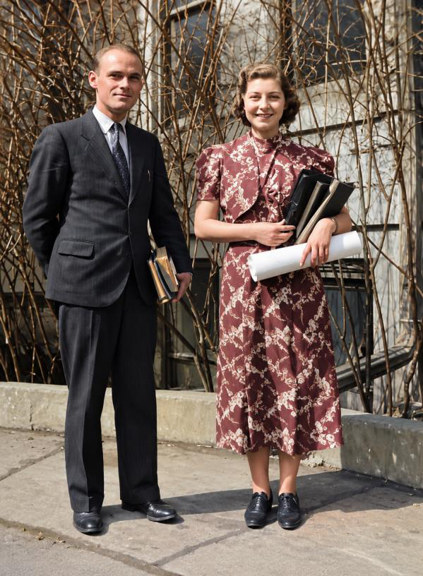
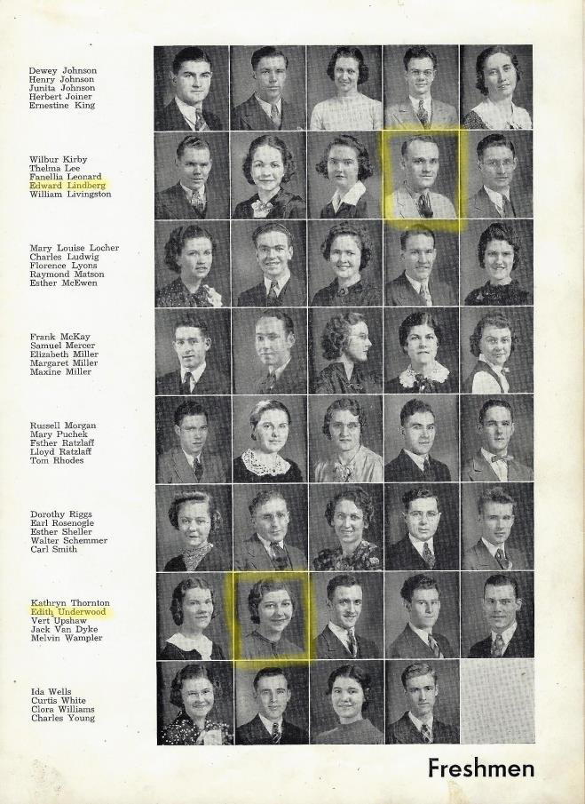
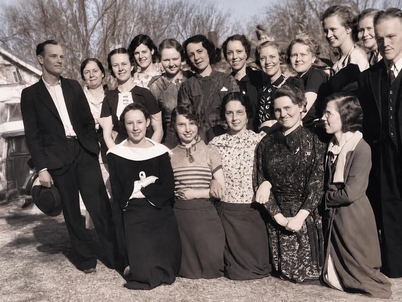

My father was in love with the pastor’s daughter.
Her name was Virginia Fansler, and she was the first girl my father ever truly gave his heart to. The two of them shared a church, a faith and a future that seemed obvious to everyone. When Virginia went to Bible college at Anderson, Indiana, the school sponsored by the Church of God, my father followed. His plan, as he always told it, was to enter the ministry. Virginia, he assumed, would stand beside him.
It did not turn out that way. Somewhere in those first months, after the relationship had grown serious, Virginia ended it. She turned her back on him and wanted nothing more to do with him. It broke my father’s heart. He was a young man far from home, and the girl he had planned his life around had walked away.
I think it is a good thing to be honest about moments like this in a family story. My father was a very good man, but he was not a man who had never suffered. He knew what it was to be rejected. And I believe that made him gentler with other people for the rest of his life.
My sister Lorae, who cared for our father in his last years, heard more about Virginia from him than I did. She thinks she may still have a photograph of him looking at her outside the church in Greeley.
The Handsomest Man on Campus
But my father was not alone for long.
On the same campus there was a young woman named Edith Underwood, born February 17, 1918, in Ohio. She was a student at Anderson, too, and she had her eye on a certain young man from Colorado. My parents both began at Anderson in 1938 and studied there for two years, finishing in 1940.



My mother told me many times, with a smile that never faded, that my father was the most handsome guy on campus, and that all the girls wanted to go with him. “I was lucky enough,” she would say, “to be the one he had his eye on.” By the time he and Edith began seeing each other, the wounds from Virginia had begun to heal. They dated. They studied. They fell for each other.
There was a catch, and it nearly cost them everything. As their time at Anderson drew to a close, they stood at a crossroads. My father was planning to go into the ministry. My mother wanted to serve as a missionary. They were two people with big calls, headed in two directions, and my father, in a moment I think he regretted for years, told my mother, “I hope you marry a very nice preacher.”
My mother was crushed. She was, in her words to me, madly in love with him. The two went their separate ways.
My mother was not without options. Her diary records two other men who were interested in marrying her. In the end, she chose the man who had just told her to marry a preacher.
Denver
My mother went back to her home in Cleveland, Ohio. My father went to Denver, Colorado, where he found work at Linder’s, delivering fresh meat to grocery stores. But he could not stop thinking about the girl from Ohio.
In time my mother came west and stayed with my grandmother Ida Lindberg in Greeley, while my father worked in Denver. It was a sensible arrangement. They wanted to find out whether they were truly compatible before they married, and my father wanted to know whether his mother thought Edith was the right woman for him. Grandma Lindberg, who had prayed her youngest son into the church, had a stake in the matter.
At some point, he made up his mind. He proposed, and my mother, who had never stopped loving him, said yes immediately.
In the spring of 1940, my parents were married in the Church of God in Denver, on May 5.
It was a joyful day, but it took place at a dark moment in the world. If you know the history of that spring, you know what was happening an ocean away. In May 1940, Adolf Hitler’s armies were sweeping across Western Europe. The Netherlands had fallen to German Panzer divisions, and France was about to follow. In the Pacific, Japan had already invaded Manchuria and was pushing into other parts of Asia. The world was on fire, and my parents were exchanging vows in Colorado.
Neither of them could have known how quickly that fire would reach them.
My father always said that marrying my mother was the best decision he ever made. I have heard him say, “Your mother is my soulmate.” He once told me, “She is the reason I’m successful in life.” And then he told me something that surprised me, because he said it so plainly: “I wanted to marry a woman I met when I went to Bible college, but that woman didn’t work out. Your mother has been as good as gold, and I couldn’t have asked for a better wife.”
I have thought about that sentence for many years. It carries a lesson. The thing you want most may not be the thing God has planned for you, and the closed door that crushes you might be the one that sends you toward the person you were meant to marry.
December 7, 1941
My parents were barely a year and a half into their marriage when the world changed.
On December 7, 1941, the Imperial Japanese Navy attacked Pearl Harbor. President Franklin Delano Roosevelt called it “a date which will live in infamy,” and it did. Until then the United States had stood somewhat on the sidelines, supporting Britain and the Allies with supplies and sympathy, but not with soldiers. Pearl Harbor ended that. America was at war with Japan, and within days Germany, and Mussolini’s Italy, declared war on us. In a moment, my father’s country was fighting on two fronts, against three enemies.
My father was a young husband, and in October of 1942, a young father of a son, Gene Elton Lindberg. He was a Christian, a man preparing for a life in the church. He had a decision to make that would define the next four years. He was not going to run from his country, but he was also not going to pick up a rifle. He had read the words of Jesus too many times: Love your enemies.
What he decided, and how he lived it out, is the story of the next chapter.